Check a customer's POs against its routing and distribution files before goods ship.
Draft. PO Recap checks TJX POs against their distros. For Burlington, it reads POs and ticketing, but not routing or distro files. The Other customers section is general practice, not from our tools.
Jump to: Check a new TJX buy · What each flag means · Add a late distro or PO · Export several buys · Check a Burlington buy · Add a revised Burlington PO · Move a PO · Other customers · Rules to remember · Reference
Screenshots use made-up sample data. Click any picture to see it larger.
Click Open PO Recap above. If it asks, click Sign in with Microsoft and use your Metro1 Microsoft account. If it says you don't have access, ask Saul to add you.
NEW BUY 1 is at the top. A buy is the POs one customer sent together. Saved buys are under BUYS 2, newest first.
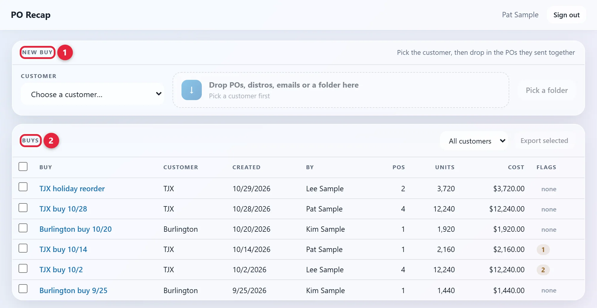
Open the CUSTOMER list 1 in NEW BUY. For a TJX buy, pick the first name on the list. The tool lists TJX under its division name.
The list remembers your last pick, so check it's right. The box next to it 2 stays grey until a customer is picked.
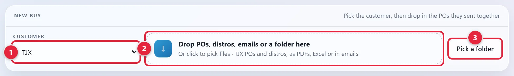
These pictures say TJX. The second store chain (Sample B) and the FOB rules and terms (Port A, Port B, Term A) are made up too. The tool shows the real ones.
A distro is the customer's routing and distribution instructions for one PO. It says how many units go to each distribution center (DC).
In the picture above, drag the files onto the box 2, or click the box to pick them. For a whole folder, click Pick a folder 3. You can add PDFs, Excel distros, or saved emails that have them attached.
No distro yet? Add the POs now. You can add the distro later.
It reads each file, then shows these bars:
If nothing can be saved, a red bar says so and you can't click Save buy.
BUY NAME at the top is filled in with the customer and today's date. Type over it to change it.
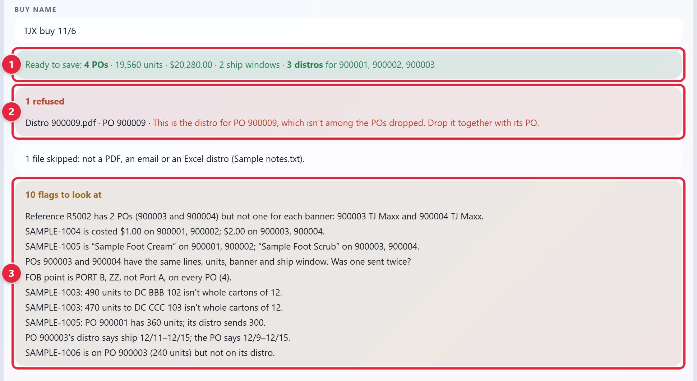
The table lists each PO it read. Check that every PO you added is listed. If one is missing, look in the red and white bars. Then click Save buy 1. The buy opens when it's saved.
Nothing is saved before you click. If you open another buy first, you'll have to add the files again. To start over, click Cancel.
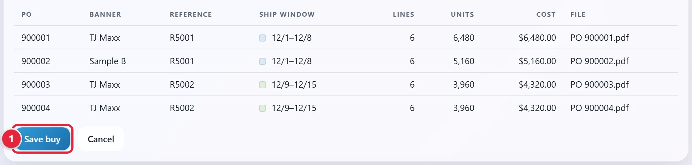
The tiles sum up the buy. A ship window runs from the start ship date to the cancel date. DISTROS IN 1 turns gold when a PO has no distro yet. FOB POINT 2 turns red when it's flagged. The FOB point is the place, or for Burlington the term, that the PO names for FOB.
Under the tiles are the totals, BY SHIP WINDOW and BY BANNER. A banner is the store chain the PO is for.
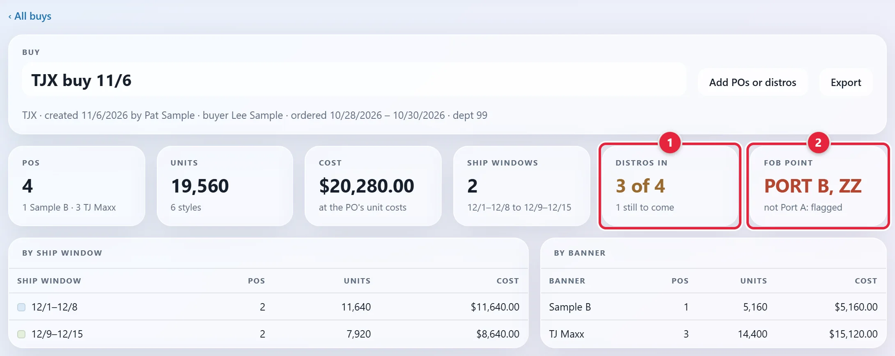
Scroll down. FLAGS is under the totals. It lists what needs a look. The word at the left says what kind of flag it is. This sample buy has every kind. If the buy has no flags, this box isn't there.
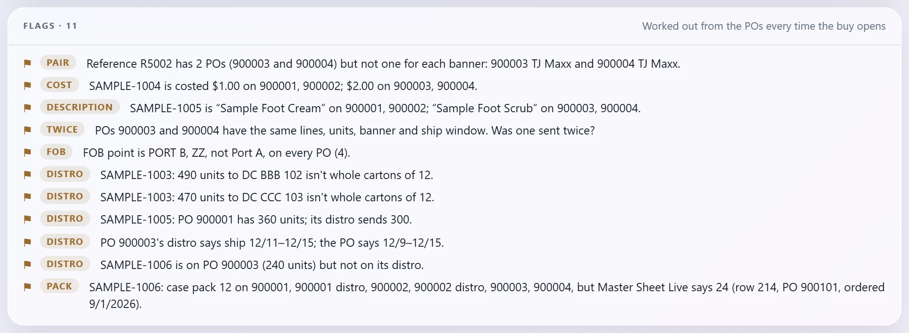
| Flag | What it means |
|---|---|
| FOB | The FOB point differs from the customer's rule. The flag says what the PO has and what the rule is. |
| DISTRO | Something on the distro doesn't match the PO: the units, pack, ship dates, banner or a style. Or a DC's units aren't whole cartons. Hold your mouse on the red figure (don't click) for the reason. An Excel distro is checked for less. See Check the DISTRO card. |
| PACK | The case pack (units in a carton) is missing from Master Sheet Live, our Excel workbook of PO lines, or doesn't match it. Or the style isn't on PO Recap's saved copy of that sheet yet, so it wasn't checked. The flag says which. |
| PAIR | Each reference number (the REFERENCE column) should have one PO for each banner. This one doesn't. TJX only. |
| COST | The same style has more than one cost. |
| DESCRIPTION | The same style has more than one description. Differences in capitals or spacing don't count. |
| TWICE | Two POs have the same lines, units, banner and ship window. One may have been sent twice. |
RECAP is under FLAGS. It has a row for each style and a column for each PO. Each ship window has its own color. Click a PO number to open its PDF.
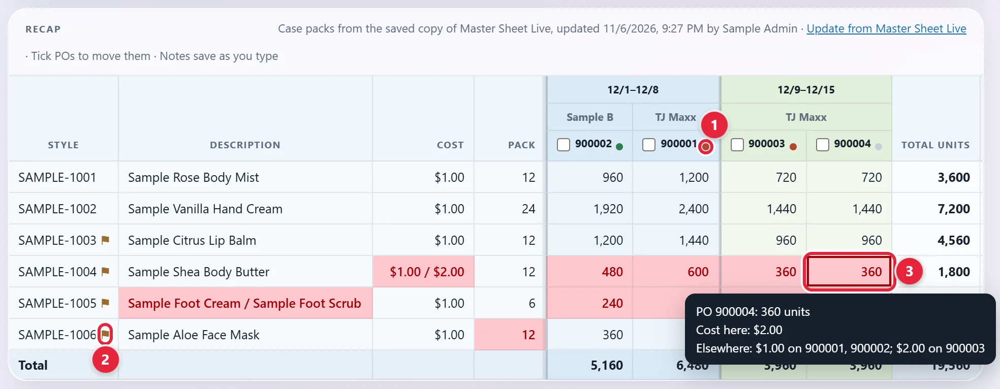
Scroll the table to the right to reach NOTES. Type in the box on that style's row 1. It saves as you type and goes on the export.
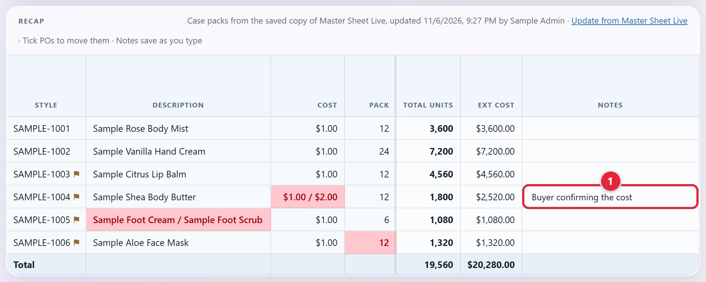
The DISTRO card is the box under RECAP. Each PO with a distro has a line. Click a line to open or close it. A line where the distro and the PO disagree is already open. The last columns show the units going to each DC.
matches the PO ✓ 1 means the distro agrees with its PO. It doesn't check Master Sheet Live, so a closed line can still hold a red pack. That also shows as a PACK flag.
Red cells don't match. Hold your mouse on the red figure 2 for the reason. A problem with the whole distro, such as its ship dates, shows in a red bar. No distro yet 3 lists the POs still waiting for one.
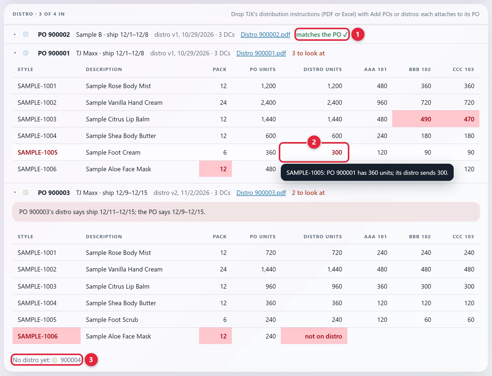
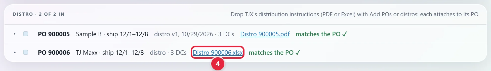
Work through each flag with the buyer or Production. For TJX, the buyer's name is in the line under the buy's name 1, and in the BUYER column of the POS card, the list of POs at the bottom of the buy. Burlington buys show no buyer.
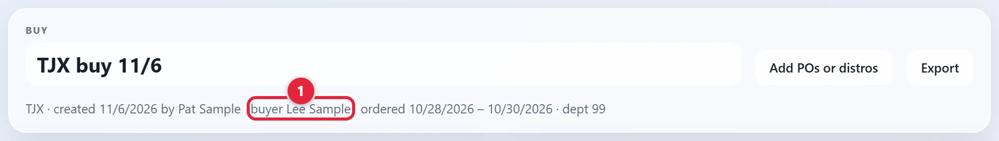
If the customer sends a corrected file, add it to the buy. A corrected TJX PO is refused until Saul removes the old one. A re-sent distro needs a higher version number. See Rules to remember.
To explain a style's flag, write it in NOTES on that style's row. There's one box for each style, and it goes on the export. A flag about a whole PO (FOB, PAIR, TWICE, a distro's ship dates) has no row of its own. Saul to confirm where to record those.
PO Recap has no button to clear a flag. A flag goes away only when what sets it off changes: the POs, the distros or, for a PACK flag, Master Sheet Live. A corrected sheet counts once the buy reads it or the saved copy updates. See The case pack line under Reference.
Click Export 1 at the top of the buy. An Excel file named after the buy downloads. The top right says Exported 1 buy 2.
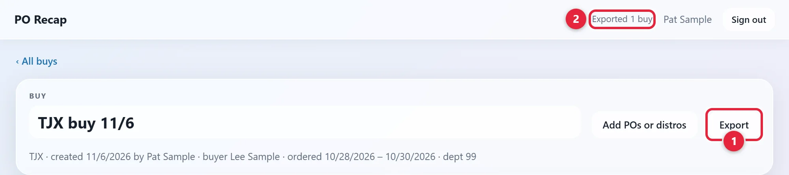
The first tab has the buy's totals, then the recap, then the flags. Each style and each flag has a ☐ in a Check column. A buy with distros gets a second tab for them, with the units by DC. Scroll this table sideways to see all of it.
| Check | Style | Description | Cost | Pack | 12/1–12/8 | 12/9–12/15 | Total units | Ext cost | Notes | ||
|---|---|---|---|---|---|---|---|---|---|---|---|
| Sample B | TJ Maxx | TJ Maxx | |||||||||
| 900002 | 900001 | 900003 | 900004 | ||||||||
| ☐ | SAMPLE-1001 | Sample Rose Body Mist | $1.00 | 12 | 960 | 1,200 | 720 | 720 | 3,600 | $3,600.00 | |
| ☐ | SAMPLE-1002 | Sample Vanilla Hand Cream | $1.00 | 24 | 1,920 | 2,400 | 1,440 | 1,440 | 7,200 | $7,200.00 | |
| ☐ | SAMPLE-1004 | Sample Shea Body Butter | 1.00 / 2.00 | 12 | 480-$1.00 | 600-$1.00 | 360-$2.00 | 360-$2.00 | 1,800 | $2,520.00 | Buyer confirming the cost |
| ☐ | SAMPLE-1006 | Sample Aloe Face Mask | $1.00 | 12 (master 24) | 360 | 480 | 240 | 240 | 1,320 | $1,320.00 | |
Saul to confirm what happens to this file next.
Find it under BUYS on the home page and click its name. To narrow the list, use All customers above it. From inside a buy, ‹ All buys at the top left takes you back.
The list doesn't show PO numbers. Not sure which buy has the PO? Try this. It saves nothing.
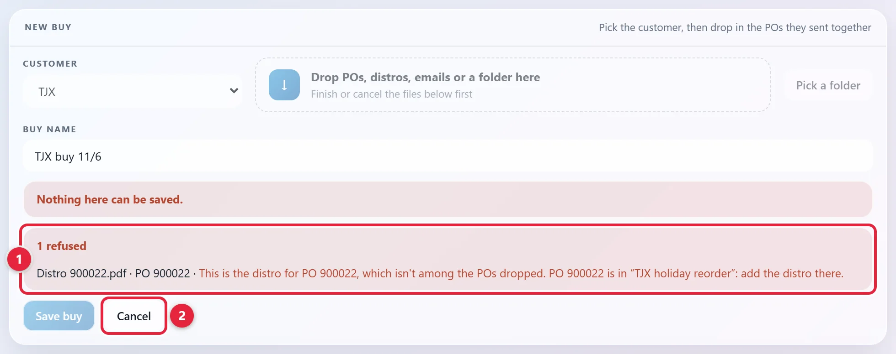
It's at the top of the buy 1. A drop box opens below 2.
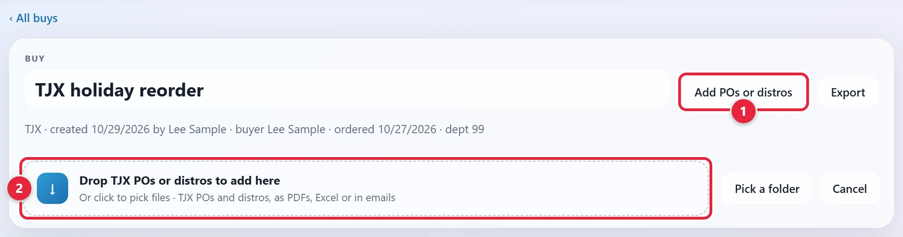
Drag them onto the box, click the box to pick them, or click Pick a folder. Each distro attaches to its own PO. A corrected TJX PO and a re-sent distro have their own rules. See Rules to remember.
The green bar 1 says what's ready. It also says when a newer distro replaces an older one. The button 2 names what it will add, such as Add 2 distros. The distro in use stays until you click it. The top right then says Saved.
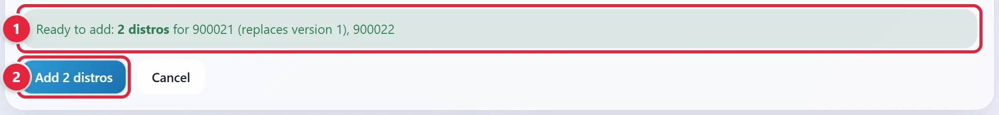
Tick the box at the left of each buy 1 under BUYS.
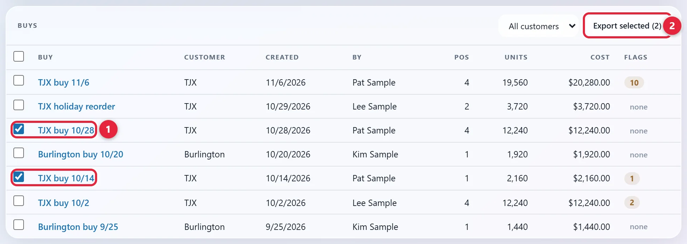
It's at the top right 2. One Excel file downloads, named PO Recap and today's date. Each buy gets its own tab, plus a second one if it has distros.
Follow Check a new TJX buy, but add only PO files and skip step 10. These steps show what's different.
PO Recap reads Burlington POs and their ticketing. It doesn't read Burlington routing or distro files, so there's no DISTRO card and no dots. For routing, see Other customers.
Pick Burlington under CUSTOMER in NEW BUY.
Add them the same way as for TJX. One file can hold several PO numbers. The table shows each PO's DC and VERSION. TICKETING 1 says what the PO asks for.
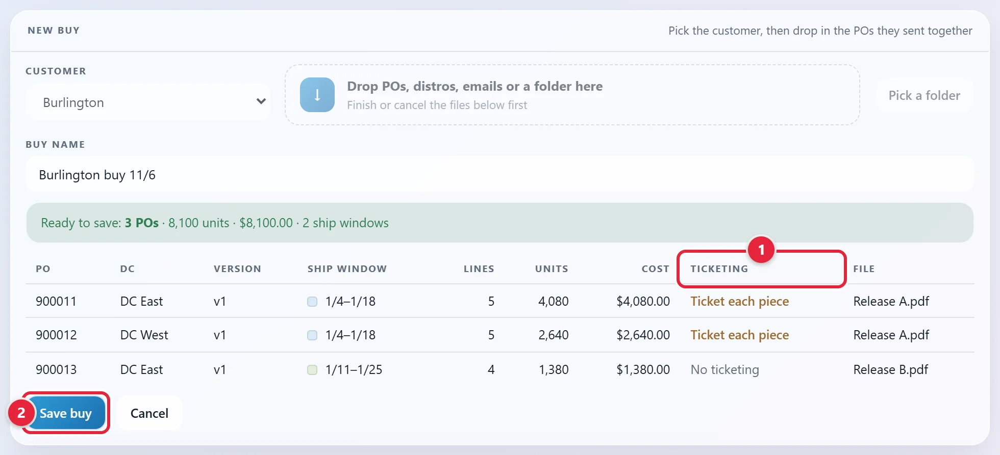
It's under the table 2 in the picture above. The buy opens when it's saved.
The button 1 says Add POs. PO VERSION 2 takes the place of DISTROS IN. It says if Burlington has revised a PO. The totals are BY DC, not by banner.
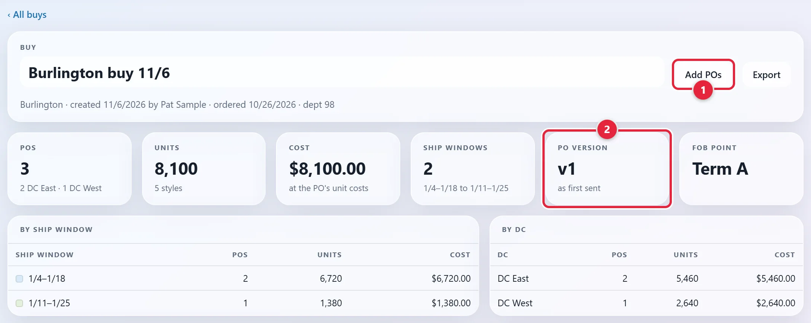
A T beside a PO number 1 means it asks for tickets. Hold your mouse on it to read what it asks for. The TICKETING column 2 in the POS card, the list of POs at the bottom of the buy, says the same, or No ticketing. The export has it too.
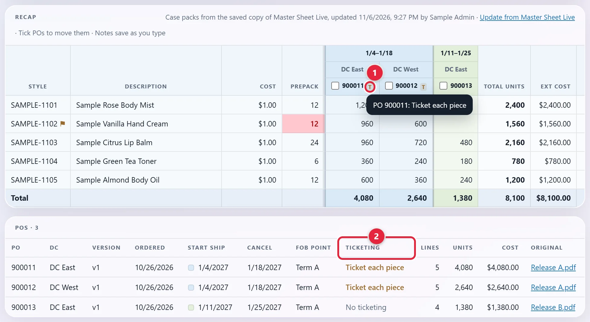
A prepack is Burlington's word for the inner pack, the smaller pack inside a carton. The pack column is called PREPACK here.
A PACK flag means the prepack doesn't match the Inner column of Master Sheet Live, or isn't on it. It can also mean the style isn't on PO Recap's saved copy of that sheet yet.
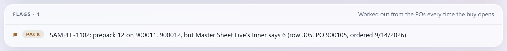
Burlington's POs carry a version number. A revised PO has a higher one, and it replaces the older one in the buy.
Find the buy that has the PO under BUYS on the home page, and click its name.
The list doesn't show PO numbers. Not sure which buy has the PO? Try this. It saves nothing.
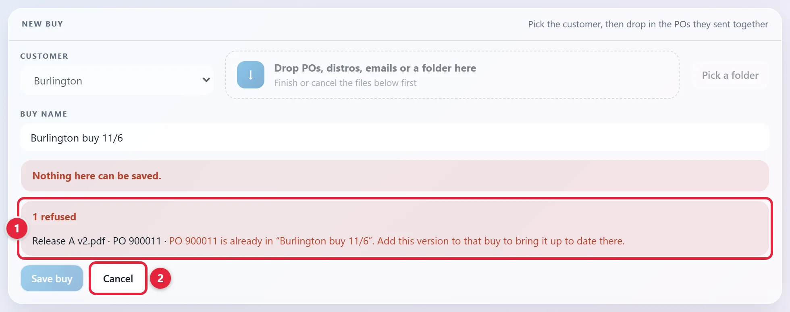
It's at the top of the buy 1. A drop box opens below 2.
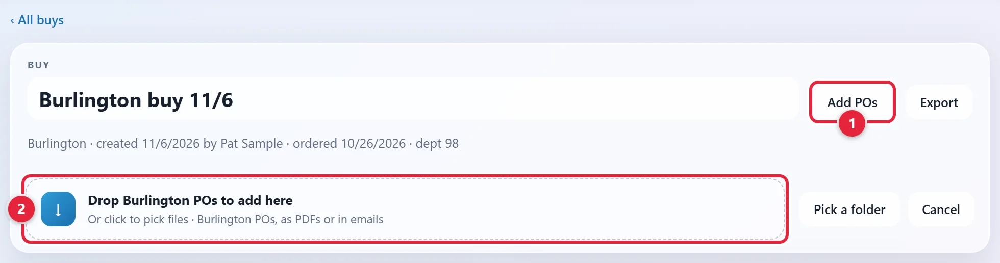
Drag it onto the box, or click the box to pick it. If its version is higher, it replaces the older one. The green bar 1 says so. The same or an older version is refused.
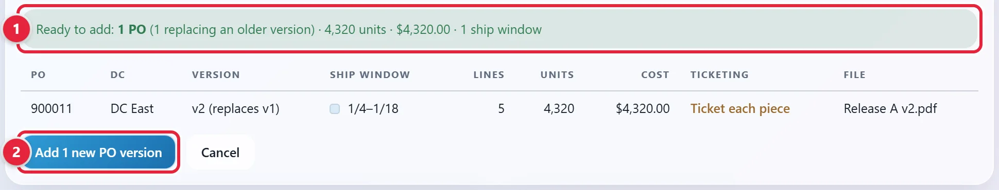
It's under the table 2 in the picture above. The notes on its styles stay. The top right then says which version it is now.
Find it under BUYS on the home page and click its name.
In RECAP, tick the box beside the PO number 1. A bar opens above the table.
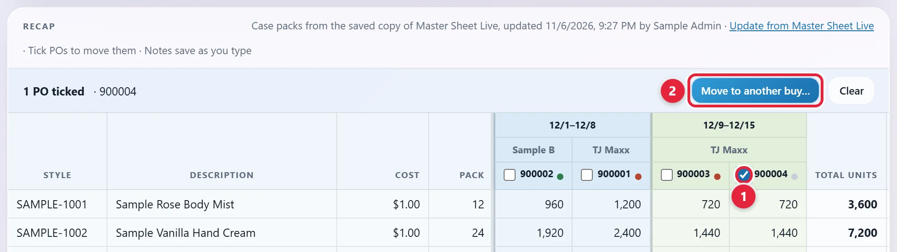
It's at the right of that bar 2.
Under MOVE THEM TO, pick another buy for the same customer, or A new buy. For a new buy, NEW BUY'S NAME is already filled in with the old name plus (split). Type over it if you want another name.
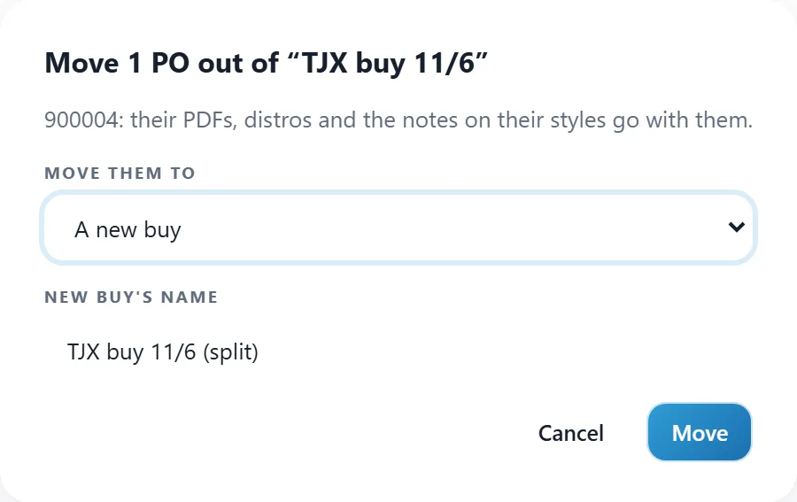
The PO's PDF, its distro and the notes on its styles go with it. At least one PO has to stay in the buy. The top right says where it went.
| TJX | Burlington | |
|---|---|---|
| Reads | Domestic POs for TJ Maxx and one other TJX banner, and their distros. Any other TJX PO is refused. | POs and their ticketing. Prepack lines only. |
| Second heading in RECAP | Banner | DC |
| PO columns | REFERENCE, BUYER | VERSION, TICKETING |
| Pack column | PACK, checked against Master on Master Sheet Live | PREPACK, checked against Inner on Master Sheet Live |
| Fifth tile | DISTROS IN | PO VERSION |
| Add button | Add POs or distros | Add POs |
| Flags | All seven | All but PAIR and DISTRO |
| File | What PO Recap does |
|---|---|
| Reads it as a PO, or as a TJX distro. | |
| Excel (.xlsx, .xls) | Reads it as a TJX distro. The PO number and version come only from the file name. The name must include the 6-digit PO number. Write the version like _V2. Any other spreadsheet is skipped. An Excel distro has no ship dates, so PO Recap can't check them. It checks the banner only if the file name has it. To check both, add the distro's PDF too. The PDF replaces the Excel copy. If their version numbers match but their lines don't, the PDF is refused. |
| Saved email (.eml, Outlook .msg) | Reads its attachments, and any emails attached to it. |
| Folder | Reads everything inside it, all the way down. |
| Anything else | Skips it and names it in a note. |
If you add the PDF and the Excel copy of one distro, it's read once, from the PDF. If they have the same version number but different lines, both are refused.
| The red bar says | What to do |
|---|---|
| This is the distro for PO 900009, which isn't among the POs dropped. | Drop it together with its PO. If the PO is in a saved buy, the reason names that buy. Add the distro there. |
| PO 900001 is already in “TJX buy 11/6”. | It's saved in that buy. A revised Burlington PO goes into that same buy. |
| PO 900001 is already in this buy. | Burlington: only a higher version replaces it. TJX: ask Saul to remove the old one, then add the new one and its distro. Removing a PO removes its distro too. |
| PO 900011 is version 2 in this buy; this file is version 1. | Use the newest version. |
| Two different versions of PO 900001 were dropped. Or: Two different distros for PO 900001, both version 1, were dropped. | Drop only the one you want. |
| PO 900001 already has a different distro with the same version number (1). | Ask the customer to re-send it with a higher version number. |
| PO 900001 already has version 1 of its distro; this is unnumbered. | Use the distro's PDF, which carries its version, or check that the Excel file's name has its version, like _V2. |
| This isn't a Burlington PO. For TJX, it says the file doesn't have the TJX domestic PO header. | Check the customer you picked. For TJX, PO Recap reads domestic POs only. |
| This looks like a distribution sheet, but its file name doesn't carry a 6-digit PO number. | Put the PO number in the Excel file's name. |
| The lines add up to 1,200 units, but the PO says 1,440. Or: a line couldn't be read. | The reason says where. Check that part of the file. If the file is wrong, ask the customer for a corrected one. |
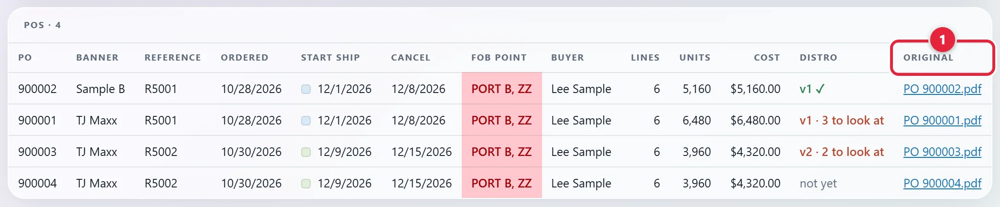
ORIGINAL 1 opens the PO's PDF. DISTRO shows the distro's version, or in if it has none. After that comes ✓ if it matches, or how many things to look at. not yet means it has no distro.
not read under FOB POINT or TICKETING means the PO was saved before PO Recap read that. A bar at the top of the buy has a button to read it from the PDF, such as Read FOB from their PDFs.
| It says | What it means |
|---|---|
| Case packs from the saved copy of Master Sheet Live, updated… | Packs were checked against a copy everyone can read. You don't need access to Master Sheet Live. If it adds that a style isn't on it yet, that style's pack wasn't checked. |
| Case packs from Master Sheet Live, read… | Packs were checked against the sheet itself. |
| Case packs not checked… | Packs weren't checked, and it says why. Click Try again. |
The copy updates when someone who keeps it up to date opens a buy. It updates only if it's a day old or a style is missing from it. That person needs access to Master Sheet Live and the right to save the copy. Update from Master Sheet Live does it now, if you have both.
The export says what it used, on its Case packs line (Prepacks for Burlington). That line is red if not every pack was checked.
| The cell says | What it means |
|---|---|
| 360-$2.00 | This style's cost differs between POs. This PO has 360 units at $2.00. |
| 240-Sample Foot Scrub | This style's description differs between POs. This PO has 240 units under this description. |
| 12 (master 24) | The pack is 12 here, but Master Sheet Live says 24. A Burlington cell says inner instead of master. |
| 12 (not on master) | This style isn't on Master Sheet Live, so its pack wasn't checked. If it says (not on the saved copy yet), the style isn't on PO Recap's copy of the sheet yet. |
| 300 (PO 360) | On the distro tab: the distro sends 300 units, but the PO has 360. |
| 490 (not ×12) | On the distro tab: these units aren't whole cartons of 12. |